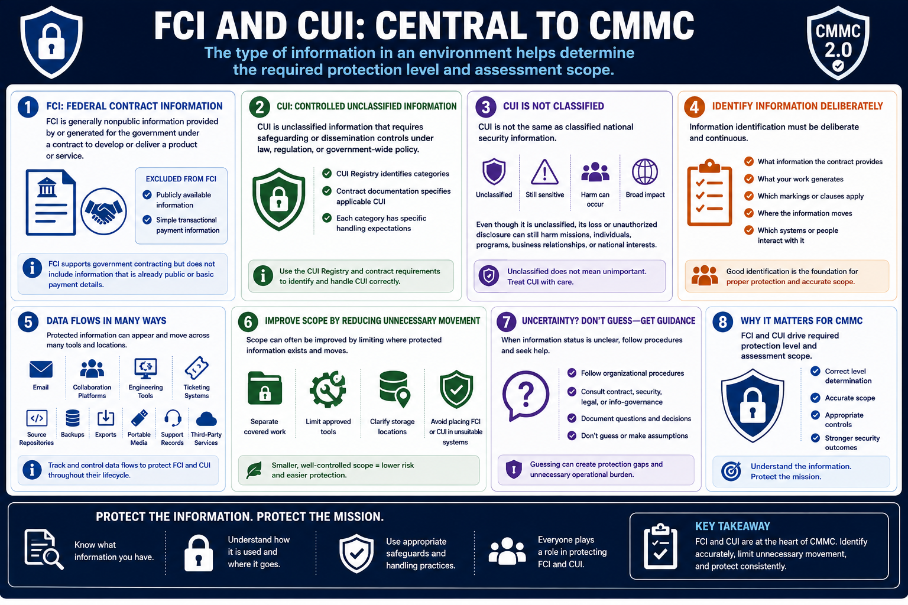

What Is CMMC 2.0?
Understanding FCI and CUI
Connecting to LMS... Progress: in progress
Version 1.0 | Date: 2026-06-16 | Educational overview of CMMC 2.0 concepts.

Narration
Federal Contract Information and Controlled Unclassified Information are central to CMMC because the type of information in an environment helps determine the required protection level and assessment scope.
FCI is generally nonpublic information provided by or generated for the government under a contract to develop or deliver a product or service. Publicly available information and simple transactional payment information are excluded from that concept.
CUI is unclassified information that requires safeguarding or dissemination controls under law, regulation, or government-wide policy. The CUI Registry and contract documentation help identify applicable categories and handling expectations.
CUI is not the same as classified national security information. Even though it is unclassified, its loss or unauthorized disclosure can still harm missions, individuals, programs, business relationships, or national interests.
Information identification must be deliberate. Teams need to understand what information the contract provides, what their work generates, which markings or clauses apply, where the information moves, and which systems or people interact with it.
Data flow matters because protected information may appear in email, collaboration platforms, engineering tools, ticketing systems, source repositories, backups, exports, portable media, support records, and third-party services.
Scope can often be improved by reducing unnecessary movement. Organizations may separate covered work, limit approved tools, clarify storage locations, and avoid placing FCI or CUI in systems that were not designed or governed for it.
When information status is unclear, employees should follow organizational procedures and seek guidance from contract, security, legal, or information-governance personnel. Guessing can create both protection gaps and unnecessary operational burden.